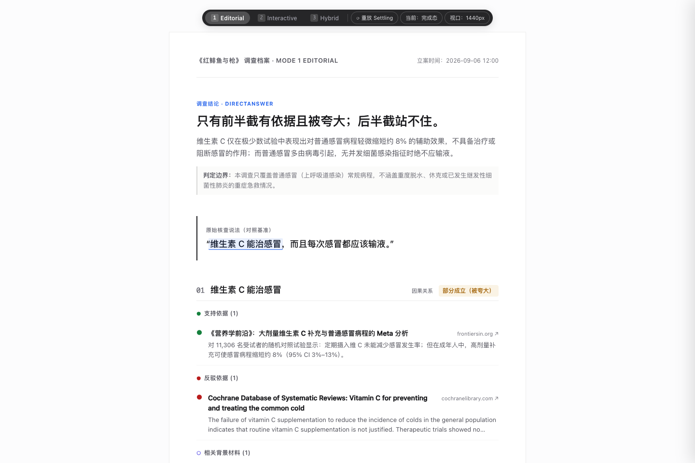
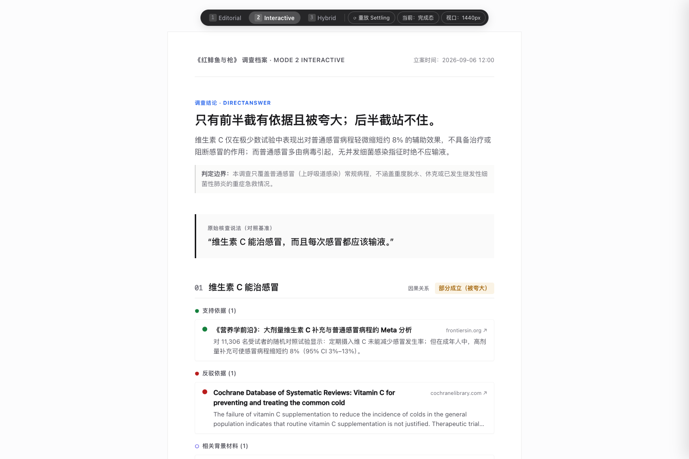
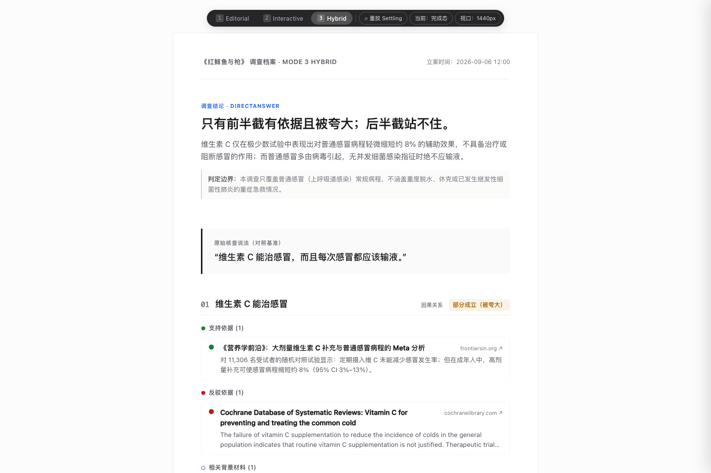
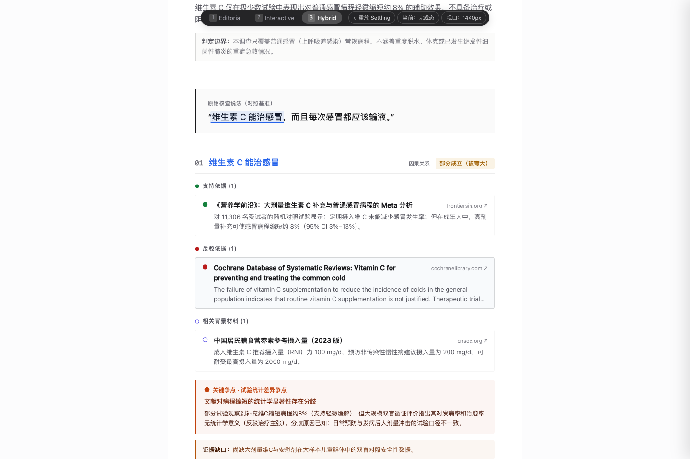
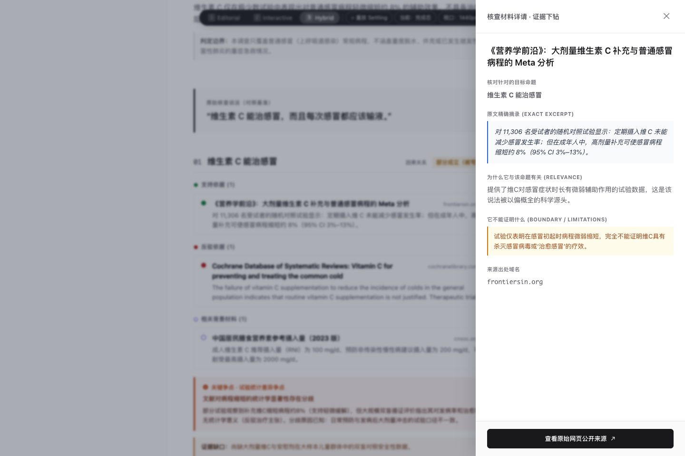
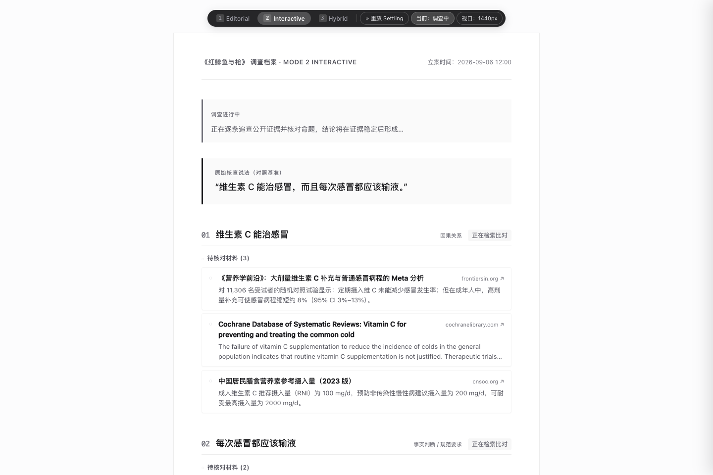
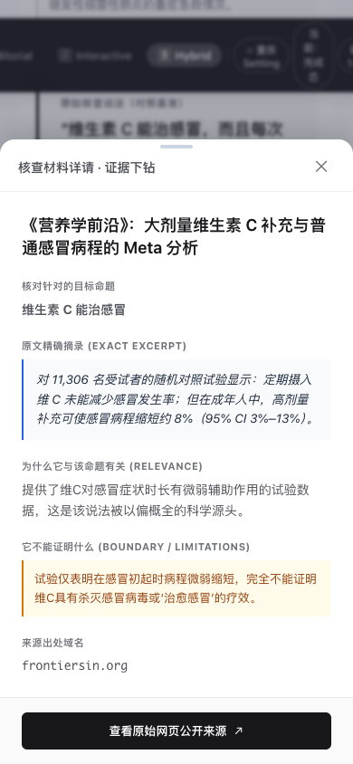
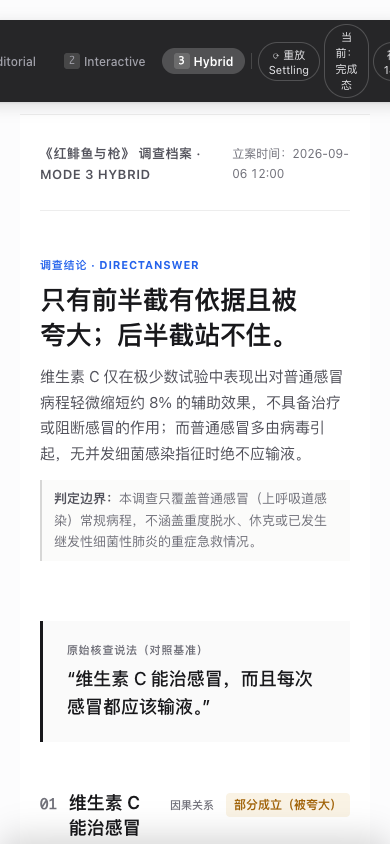

把外部世界中真正优秀的设计语言（Cuberto、Nikoloz Zaalovich、CollectUI、Edoardo Lunardi/kugiri）映射进白盒调查语义。 本页汇集了完整映射规范、kugiri 孤立实测结论、可运行的探索原型入口、以及 11 张全生命周期高保真走查截图。
统一消费真实维 C 案例（2 Claim, support, contradict, context-only, gap, conflict, directAnswer）

◌ 待核对 通过 FLIP 算法平滑迁移至 ● 支持/反驳/相关，DOM 身份永不销毁，无刷新无跳变。


只保留具有强解释力的动效，坚决删除装饰性、表演性动画
originalSpan 驱动，用户一眼看清原句与命题的对应。
◌ 待核对。核查完成后，同一 DOM 节点平滑位移至对应结论组，Glyph 渐变为 ● 支持 或 ● 反驳。传达“调查桌上的同一叠材料被放到了它真正属于的档案袋”。
directAnswer 大标题沉着浮现。不是系统在盖章宣布答案，而是用户肉眼看见答案从证据中自然长出。
裁决：不引入生产依赖（原生 CSS 语义 mark + 现有 Motion 胜出）
| 实测维度 | kugiri (0.4.0) 表现 | 现代原生 CSS / 现有 Motion 表现 | 裁决结果 |
|---|---|---|---|
| 中文长句与标点禁则 | 基于 Intl.Segmenter 拆分后破坏标点挤压，跨 span 产生缝隙 | 排版引擎底层遵守 line-break: strict，无缝渲染 |
原生胜出 |
| 中英混排与 inline 标签 | 折行时克隆 <a>/<strong>，导致 DOM 节点膨胀与 ID 重复 |
DOM 节点保持单节点树结构，事件与外链天然完好 | 原生胜出 |
| text-wrap: balance | 拆分时计算的行位置与 balance 重排冲突，产生微抖动 | 浏览器 GPU/排版引擎一次性原生平衡计算 | 原生胜出 |
| 动态 Resize (1440/768/390px) | 必须频繁调用 revert() 并重新 split()，引发掉帧 |
零 JS 介入，流式响应式排版，维持稳定 60/120 FPS | 原生显著胜出 |
| 无障碍 (Screen Reader) | 若未加深度 aria-hidden 保护，VoiceOver 会逐字生硬拼读 | 整句完整保留在 Accessibility Tree 中，语调连贯自然 | 原生显著胜出 |
点击可展开阅读详细工程理由
覆盖桌面 1440px 与移动 390px 各关键状态




